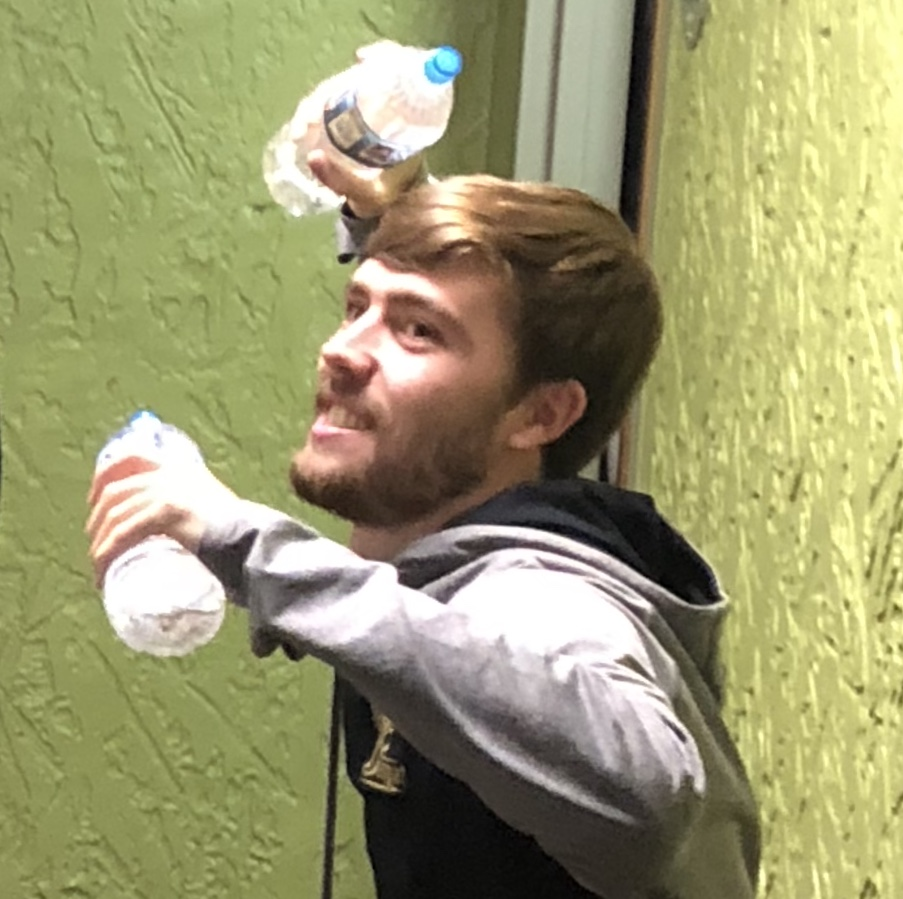

Jack Bruce
Hi, welcome to my site!
My name is Jack Bruce. I'm a 22 year old college senior at Michigan State University. I'm studying at the college of Communitcation Arts and Sciences with a major in Games and Interactive media and a minor in Game Design. I've been a part of a few different game projects while studying including;
- Chain Gang
- Hindsight
- Persephone's Path
- Tiny Ostrich Arena
- Hattrick, The Magician
I do have some other interests besides games though. I love hockey especially my home team (Go Bolts!). Running is a big hobby of mine. I ran Track and Cross Country in High School and I've been attempting to stay in shape while in College. Anyway, thanks for visiting my page!